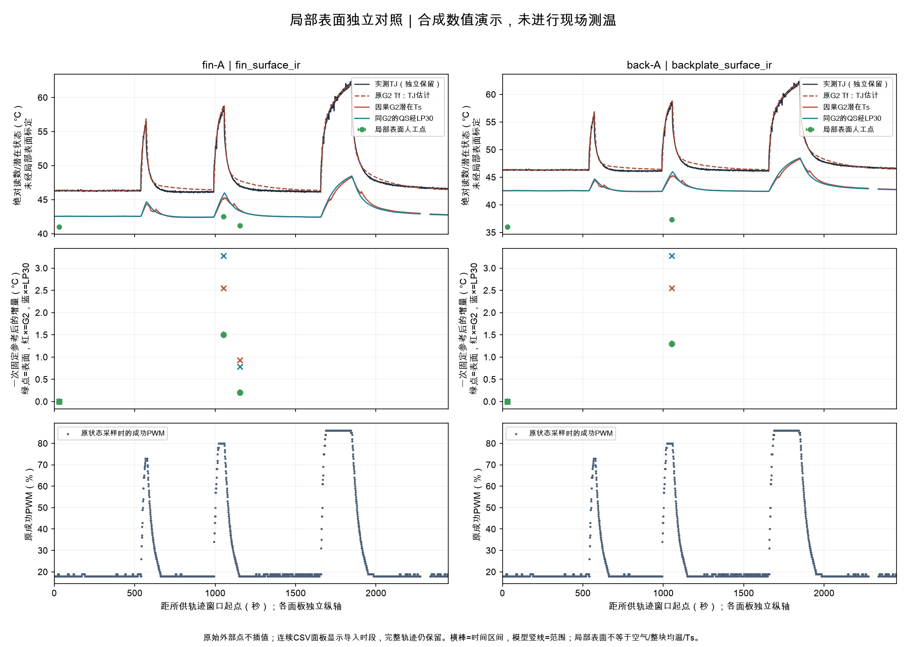

本报告外部数值均为合成演示，不构成现场测温证据。
数值点5；声明为外部测量的数值点0；合成点5；配对点5。n是记录点，不是独立试验。
尚无真实YET-610L样例验收回执；通用导入不代表厂商格式已验收。
输入类别不证明品牌、校准或现场来源；仪表精度、探头安装/响应及表面与Ts的物理对应未验证。
三种时钟与写入记录分开；普通伪彩图不做数值解码。局部表面不等于Ts，外部点不进入模型；空测温不阻挡其他软件/建模。

| 记录 | 会话/测点 | 被测对象 | 表面读数°C | 原始测量时间 | 配对资格 | 固定参考温升°C | 限制 |
|---|---|---|---|---|---|---|---|
| fin-bg | SYNTH-fin | fin_surface_ir | 41.0 | 2026-10-13T17:39:19.288921+00:00 | matched_asof | 0.0 | local_apparent_surface_not_air_or_whole_body, unknown_geometry_roi_definition, unknown_instrument_accuracy, unknown_instrument_model, unknown_settings_emissivity, unknown_settings_measurement_footprint, unknown_settings_reflected_temperature_c, unknown_settings_surface_finish |
| fin-work | SYNTH-fin | fin_surface_ir | 42.5 | 2026-10-13T17:56:22.382945+00:00 | matched_asof | 1.5 | local_apparent_surface_not_air_or_whole_body, unknown_geometry_roi_definition, unknown_instrument_accuracy, unknown_instrument_model, unknown_settings_emissivity, unknown_settings_measurement_footprint, unknown_settings_reflected_temperature_c, unknown_settings_surface_finish |
| fin-recovery | SYNTH-fin | fin_surface_ir | 41.2 | 2026-10-13T17:58:02.724649+00:00 | matched_asof | 0.20000000000000284 | local_apparent_surface_not_air_or_whole_body, unknown_geometry_roi_definition, unknown_instrument_accuracy, unknown_instrument_model, unknown_settings_emissivity, unknown_settings_measurement_footprint, unknown_settings_reflected_temperature_c, unknown_settings_surface_finish |
| fin-image-only | SYNTH-fin | fin_surface_ir | None | 未知 | measurement_time_unknown | — | image_only_no_numeric_reading, local_apparent_surface_not_air_or_whole_body, measurement_time_unknown, time_precision_unknown_not_zero, unknown_geometry_roi_definition, unknown_instrument_accuracy, unknown_instrument_model, unknown_settings_emissivity, unknown_settings_measurement_footprint, unknown_settings_reflected_temperature_c, unknown_settings_surface_finish |
| back-bg | SYNTH-back | backplate_surface_ir | 36.0 | 2026-10-13T17:39:19.288921+00:00 | matched_asof | 0.0 | local_apparent_surface_not_air_or_whole_body, unknown_geometry_roi_definition, unknown_instrument_accuracy, unknown_instrument_model, unknown_settings_emissivity, unknown_settings_measurement_footprint, unknown_settings_reflected_temperature_c, unknown_settings_surface_finish |
| back-work | SYNTH-back | backplate_surface_ir | 37.3 | 2026-10-13T17:56:22.382945+00:00 | matched_asof | 1.2999999999999972 | local_apparent_surface_not_air_or_whole_body, unknown_geometry_roi_definition, unknown_instrument_accuracy, unknown_instrument_model, unknown_settings_emissivity, unknown_settings_measurement_footprint, unknown_settings_reflected_temperature_c, unknown_settings_surface_finish |
未配对原因：measurement_time_unknown: 1
稀疏点不能证明完整峰值、秒级时滞或物理热容；未联网设备、未改变控制。完整模型取值范围、源引用及限制见paired-points.jsonl。